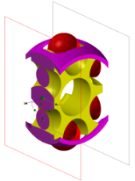

Sectioning type
There are three types of view sectioning:
One Plane
Clips out all geometry on one side of the plane (the default).

Two Parallel Planes
Clips out all geometry on the outside of two parallel planes.

Box
Clips out all geometry on the outside of six clipping planes, creating a clipping cube.